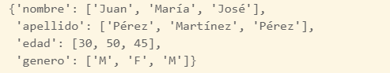
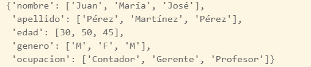
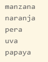

Introducción¶
Este es un tutorial rápido sobre el programa enfocado principalmente al manejo de datos y temas relacionados con ciencias de datos.
Python es un lenguaje que se emplea mucho en diversas áreas, sin embargo recientemente se ha vuelto muy popular en las áreas de ciencias de datos.
Por esa razón hoy en día es prácticamente indispensable tener conocimientos en el programa.

Iconos diseñados por Freepik from Flaticon
Instalación e interfaces gráficas¶
El sitio oficial de Python es python.org, sin embargo se recomienda instalar Anaconda, una distribución de Python que contiene muchos módulos y software adicional para trabajar con Python.
Descarga
Usted puede descargar el software gratuitamente. Visite la página de Anaconda para más información.
Python corre desde la consola de windows (cmd o powershell), aunque puede ser llamada desde Anaconda Prompt o Anaconda Powershell Prompt.
Spyder es otra interfaz gráfica destinada a desarrollar código eficientemente, ya que cuenta con varias opciones de configuración y ventanas con varias funciones. Esta interfaz gráfica ya viene incluida en Anaconda.
Python tiene unos cuadernos interactivos para correr código al instante llamados Jupyter Notebooks, este software se instala junto con Anaconda y permite ejecutar no sólo código de python, sino que tiene plugins llamados kernel que permiten ejecutar código de otros lenguajes.
También es posible usar python en Visual Studio Code, usando la extensión de Python. Cuando un código de es ejecutado, se abre una consola que ejecuta el código directamente en VSC. El uso del depurador también es una característica importante que se puede usar. También es posible crear, editar y ejecutar los cuadernos de Python desde VSC.
Objetos¶
Al ser Python un lenguaje orientado a objetos, es necesario conocer sus métodos y algunas de sus propiedades.
A continuación se muestran algunos de sus objetos.
Variables¶
Las variables son objetos que permiten almacenar un valor.
Se pueden declarar usando el operador =, por ejemplo
1 2 3 | |
Para conocer el tipo de variable, se usa la función type, por ejemplo
1 2 3 | |
La siguiente tabla muestra algunos de los tipos de datos que existen.
| Ejemplo | Tipo |
|---|---|
| x = “Hola Mundo!” | str |
| x = 20 | int |
| x = 20.5 | float |
| x = 1j | complex |
| x = True | bool |
Los objetos tienen métodos, por ejemplo, los objetos tipo str tienen métodos que los convierten en mayúsculas, por ejemplo
1 | |
Consulte los métodos de las cadenas para saber más acerca de sus propiedades.
Listas¶
Uno de los principales objetos en python son las listas. Las listas permiten guardar varios valores en una sola variable, además sus elementos están ordenados y pueden ser intercambiables. Una lista puede ser vista como un arreglo que permite valores duplicados.
Por ejemplo para crear una lista se puede declarar de la siguiente forma:
1 2 | |
El resultado que se obtiene es el siguiente:
[‘manzana’, ‘naranja’, ‘pera’, ‘uva’]
Índices
A diferencia de otros lenguajes de programación, el primer elemento de un objeto es el 0 y no el 1.
Para acceder a un elemento de una lista, se puede usar [] con el índice del elemento, también se puede definir un rango con :.
1 2 3 | |
Para agregar un nuevo elemento a una lista, se puede usar el método append.
1 2 | |
El resultado es el siguiente:
[‘manzana’, ‘naranja’, ‘pera’, ‘uva’, ‘fresa’]
Para una referencia completa acerca de las lista consulte Listas de Python.
Diccionarios¶
Otro tipo de arreglo que existe en python son los diccionarios.
Los diccionarios son un arreglo conformado por pares de claves y valores. Los elementos de un diccionario están dentro de llaves {} separados por comas, y se usa dos puntos para asignar el valor a la clave. El siguiente ejemplo muestra un diccionario.
1 2 3 4 5 | |
Los valores pueden ser una lista, por ejemplo:
1 2 3 4 5 6 7 | |
El resultado se muestra a continuación.

Claves únicas
Los diccionarios no permiten tener claves duplicadas, si se agrega una clave ya existente, se mantendrá la más reciente. Las claves funcionan como el nombre de variable en una tabla.
Es posible acceder a los elementos de un diccionario mediante sus claves, por ejemplo, para saber el nombre, se puede escribir
1 | |
Para agregar nuevas claves, simplemente se agrega la nueva clave al diccionario con los valores deseados, por ejemplo
1 2 | |

Para una referencia completa acerca de los diccionarios consulte Diccionario de Python.
Ciclos¶
Los ciclos en python permiten iterar en cualquier secuencia, por ejemplo una cadena, una lista o un diccionario.
El siguiente ejemplo muestra el funcionamiento de un ciclo sobre una lista.
1 2 3 | |
Note que x toma el valor de cada elemento de la lista y en cada iteración se imprime su valor. El ciclo termina cuando ya no hay elementos en la lista. El resultado de muestra a continuación:

Visite ciclos en python para saber más acerca de cómo funcionan los ciclos.
Paquetes¶
La mayoría de los paquetes usados en ciencia de datos son instalados cuando se instala Anaconda, por lo que solo es necesario llamar los paquetes necesarios.
Por ejemplo, para usar las librerías pandas y numpy y otra librería adicional llamada os se puede ejecutar el siguiente código.
1 2 3 | |
Nota
En ocasiones es preferible usar nombres más cortos para referirnos a
los nombres de las librerías. Por ejemplo, a pandas le llamaremos pd y np para referirnos a numpy.
si solo se desea llamar una función , se puede ejecutar el siguiente código.
1 | |
Sin embargo, se puede instalar paquetes adicionales desde la consola con los siguientes comandos:
1 | |